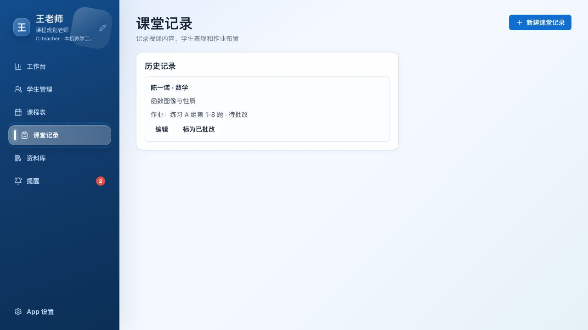

把学生管理、课程安排、课堂记录、资料库和提醒集中在一个本机桌面应用里。
学生进度、今日课程、待办作业和资料同步集中在同一个入口里。
档案、学科进度、学习风格和错题状态，在学生卡片里持续更新。
支持手动输入、图片上传和批量导入，AI 会分析错误原因、关联知识点，并生成相似练习。
课堂表现、作业情况和反馈记录同步归档，下一次复盘更清楚。

本地文件、共享目录和教学材料统一管理，支持按学生和课程追踪使用。